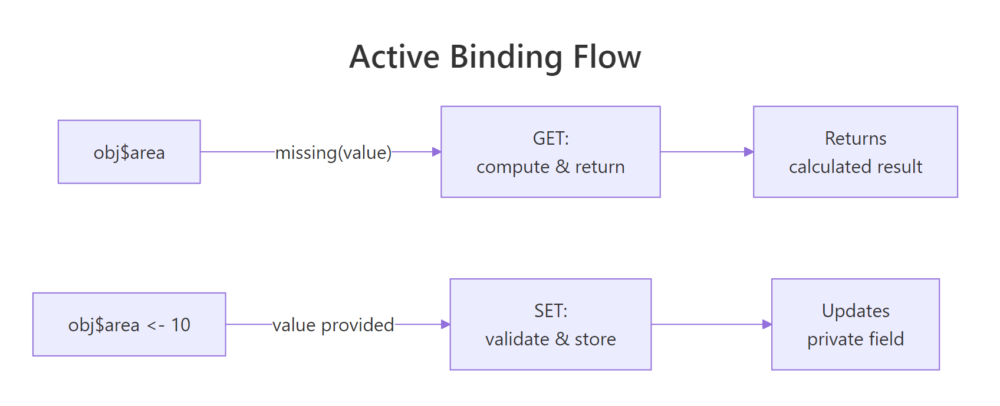
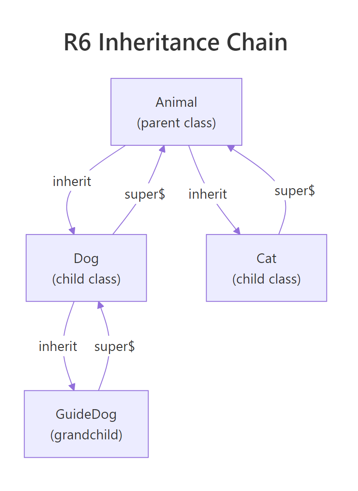
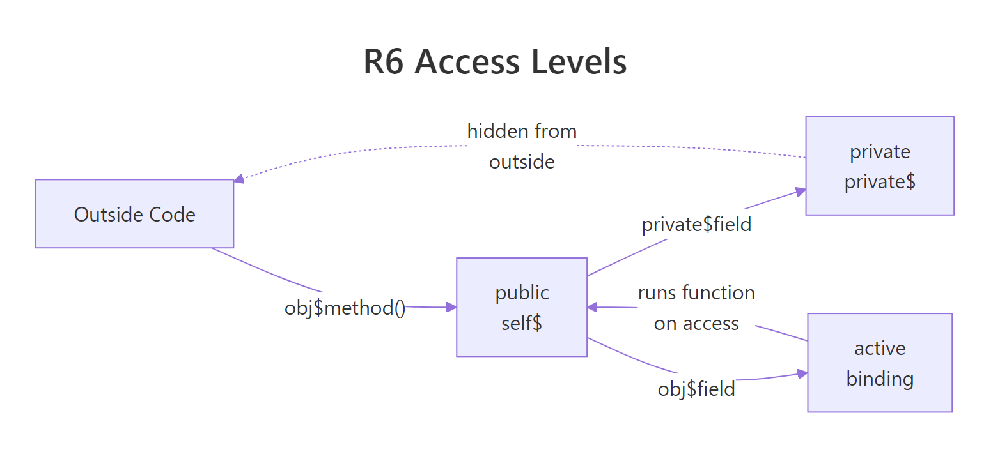

Advanced R6 in R: Inheritance, Private Fields, and Computed Properties
R6 inheritance lets a child class reuse and extend a parent's methods, private fields hide internal state from outside code, and active bindings (computed properties) run a function every time you read or write a field, giving you validation, caching, and derived values with simple obj$field syntax.
How does R6 inheritance work?
When two classes share logic, say a DataSource and a CsvSource, copying code between them breaks the moment you fix a bug in one but forget the other. Inheritance solves this: define shared behavior once in a parent, then let children specialize. Let's build a parent-child pair and see how super$ delegates back to the parent.
RParent Animal and child Dog
library(R6)# Parent classAnimal <-R6Class("Animal", public =list( name =NULL, sound =NULL, initialize =function(name, sound) { self$name <- name self$sound <- sound }, speak =function() {cat(self$name, "says:", self$sound, "\n") } ))# Child class inherits everything from AnimalDog <-R6Class("Dog", inherit = Animal, public =list( tricks =NULL, initialize =function(name, tricks =character(0)) { super$initialize(name, sound ="Woof") self$tricks <- tricks }, show_tricks =function() {if (length(self$tricks) ==0) {cat(self$name, "knows no tricks yet.\n") } else {cat(self$name, "can:", paste(self$tricks, collapse =", "), "\n") } } ))rex <- Dog$new("Rex", tricks =c("sit", "shake", "roll over"))rex$speak()#> Rex says: Woofrex$show_tricks()#> Rex can: sit, shake, roll over
Dog never defines speak(), it inherits the method from Animal. The inherit = Animal argument passes down all public and private members. Inside Dog's initialize, super$initialize(name, sound = "Woof") calls the parent constructor so the name and sound fields get set properly.
Key Insight
R6 uses single inheritance, each class has at most one parent. If you need behavior from multiple sources, hold other R6 objects as fields (composition). This keeps the class hierarchy simple and avoids the "diamond problem" that plagues multiple inheritance in other languages.
Now let's create another child to confirm the parent stays independent from each child's additions.
Cat adds purr() without affecting Dog. Each child specializes the parent in its own direction, Dog adds tricks, Cat adds purring. The parent speak() method works for both because it reads self$sound, which each child sets differently via super$initialize().
Try it: Create a Bird child class that inherits from Animal, sets its sound to "Tweet", and adds a fly() method that prints "[name] takes flight!". Create one and call both speak() and fly().
RExercise: Bird class with fly
# Try it: create a Bird classBird <-R6Class("Bird", inherit = Animal, public =list( initialize =function(name) {# your code here }, fly =function() {# your code here } ))# Test:ex_bird <- Bird$new("Robin")ex_bird$speak()#> Expected: Robin says: Tweetex_bird$fly()#> Expected: Robin takes flight!
Click to reveal solution
RBird solution
Bird <-R6Class("Bird", inherit = Animal, public =list( initialize =function(name) { super$initialize(name, sound ="Tweet") }, fly =function() {cat(self$name, "takes flight!\n") } ))ex_bird <- Bird$new("Robin")ex_bird$speak()#> Robin says: Tweetex_bird$fly()#> Robin takes flight!
Explanation:super$initialize() sets the name and sound in the parent, then fly() uses self$name which was stored by the parent constructor.
How do you override and extend parent methods with super$?
Sometimes a child needs to change what a parent method does, not just add new methods, but replace or wrap existing ones. This is method overriding. The super$ reference lets the child call the parent's version when it still wants the original behavior as part of its own logic.
RRectangle overrides describe
Shape <-R6Class("Shape", public =list( color =NULL, initialize =function(color ="red") { self$color <- color }, describe =function() {cat("A", self$color, "shape\n") } ))Rectangle <-R6Class("Rectangle", inherit = Shape, public =list( width =NULL, height =NULL, initialize =function(width, height, color ="blue") { super$initialize(color) self$width <- width self$height <- height }, area =function() self$width * self$height, describe =function() { super$describe()cat(" Type: Rectangle (", self$width, "x", self$height, ")\n")cat(" Area:", self$area(), "\n") } ))Square <-R6Class("Square", inherit = Rectangle, public =list( initialize =function(side, color ="green") { super$initialize(width = side, height = side, color = color) }, describe =function() { super$describe()cat(" (also a square with side", self$width, ")\n") } ))sq <- Square$new(5)sq$describe()#> A green shape#> Type: Rectangle ( 5 x 5 )#> Area: 25#> (also a square with side 5 )
Each describe() calls super$describe() first, then adds its own line. The call cascades up the chain: Square → Rectangle → Shape. This is the template method pattern, the parent sets the structure, children add details.
Tip
Always call super$initialize() first in child constructors. The parent may set up state that the child depends on. Calling it last (or not at all) risks using uninitialized fields. Think of it like building a house, pour the foundation (parent) before framing the walls (child).
Let's see that the child can also add entirely new methods that use inherited state without any overriding.
RSquare inherits area
# Square inherits area() from Rectangle, no override neededcat("Square area:", sq$area(), "\n")#> Square area: 25cat("Square color:", sq$color, "\n")#> Square color: green
Square never defines area() or color, both come from Rectangle and Shape respectively. The child gains the full method and field set of every ancestor.
Try it: Add a perimeter() method to Rectangle (it should return 2 * (width + height)), then call it on sq to confirm Square inherits it automatically.
RExercise: Rectangle perimeter method
# Try it: add perimeter to RectangleRectangle$set("public", "perimeter", function() {# your code here})# Test on the existing square:sq$perimeter()#> Expected: 20
Explanation:$set() adds methods to an existing class dynamically. Since Square inherits from Rectangle, the new method is immediately available on all Square instances, even ones already created.
What are private fields and methods in R6?
When you build a class for others to use, not every piece of internal state should be accessible. Private fields and methods are hidden from code outside the class, only methods inside the class (using private$) can touch them. This means you can refactor internals later without breaking anyone's code.
The balance and history fields live in private, outside code cannot read or write them directly. The only way to change the balance is through deposit() and withdraw(), which enforce rules (positive amounts, sufficient funds). The log_transaction() private method keeps an audit trail without exposing it.
Let's confirm that direct access from outside fails.
R6 enforces the boundary, private members simply don't exist from the outside. The error message is clear: you cannot access private fields or methods externally.
Warning
R6 subclasses CAN access parent private methods via super$, but NOT private fields. If a child calls super$log_transaction(), that works. But super$balance fails, private fields belong to the defining class only. If a child needs the balance, the parent should expose a public or active method for it.
Try it: Add a private field transaction_count (starting at 0) to BankAccount that increments in log_transaction, then add a public get_tx_count() method that returns it.
RExercise: Transaction counter field
# Try it: add transaction counterBankAccount2 <-R6Class("BankAccount2", public =list( initialize =function(owner) {# your code here }, deposit =function(amount) { private$balance <- private$balance + amount private$transaction_count <- private$transaction_count +1invisible(self) }, get_tx_count =function() {# your code here } ), private =list( balance =0, transaction_count =0 ))# Test:ex_acct <- BankAccount2$new("Bob")ex_acct$deposit(100)$deposit(50)$deposit(25)ex_acct$get_tx_count()#> Expected: 3
Explanation: The counter lives in private so outside code can't tamper with it. Method chaining works because deposit() returns invisible(self).
How do active bindings create computed properties?
Active bindings are the R6 equivalent of Python's @property decorator. They look like regular fields from the outside (obj$area), but behind the scenes they run a function. This lets you compute values on the fly, validate assignments, or cache expensive calculations, all invisible to the user of the class.
RActive binding for radius and area
Circle <-R6Class("Circle", private =list( .radius =NULL ), active =list( radius =function(value) {if (missing(value)) return(private$.radius)if (!is.numeric(value) || value <=0) stop("Radius must be a positive number") private$.radius <- value }, area =function(value) {if (!missing(value)) stop("area is read-only")pi* private$.radius^2 }, diameter =function(value) {if (missing(value)) return(2* private$.radius)if (!is.numeric(value) || value <=0) stop("Diameter must be positive") private$.radius <- value /2 } ), public =list( initialize =function(radius) { self$radius <- radius } ))c1 <- Circle$new(5)cat("Radius:", c1$radius, "\n")#> Radius: 5cat("Area:", c1$area, "\n")#> Area: 78.53982cat("Diameter:", c1$diameter, "\n")#> Diameter: 10
Three active bindings, three different behaviors: radius is read-write with validation, area is read-only and computed, diameter is read-write and syncs back to radius. The user never calls a function, they just read and assign fields.

Figure 3: How an active binding dispatches between GET (compute) and SET (validate & store).
The secret is the missing(value) check. When R evaluates c1$area, it calls the binding function with no argument, value is missing, so the function returns the computed result. When you write c1$diameter <- 14, the function receives 14 as value and stores it.
Let's see the validation in action.
RSet diameter updates radius
# Setting diameter updates radius automaticallyc1$diameter <-14cat("New radius:", c1$radius, "\n")#> New radius: 7cat("New area:", c1$area, "\n")#> New area: 153.938# Validation rejects bad inputtryCatch( c1$radius <--3, error =function(e) cat("Caught:", conditionMessage(e), "\n"))#> Caught: Radius must be a positive number# Read-only field rejects assignmenttryCatch( c1$area <-100, error =function(e) cat("Caught:", conditionMessage(e), "\n"))#> Caught: area is read-only
Setting diameter to 14 automatically updates radius to 7, and area recalculates to ~153.94. The validation catches negative values before they corrupt internal state. Read-only bindings reject assignment entirely.
Key Insight
Active bindings let you add validation and computation without changing the external interface. If you start with a plain public field and later need validation, convert it to an active binding, every piece of code that does obj$field still works, but now a function runs behind the scenes. This is why the convention uses .radius (private, prefixed with dot) as storage and radius (active) as the public face.
Try it: Add a circumference active binding to the Circle class that returns 2 * pi * radius. Make it read-only.
RExercise: Circumference active binding
# Try it: add circumference bindingCircle2 <-R6Class("Circle2", private =list(.radius =NULL), active =list( radius =function(value) {if (missing(value)) return(private$.radius) private$.radius <- value }, circumference =function(value) {# your code here } ), public =list( initialize =function(r) { self$radius <- r } ))# Test:ex_c <- Circle2$new(10)ex_c$circumference#> Expected: 62.83185
Click to reveal solution
RCircumference solution
Circle2 <-R6Class("Circle2", private =list(.radius =NULL), active =list( radius =function(value) {if (missing(value)) return(private$.radius) private$.radius <- value }, circumference =function(value) {if (!missing(value)) stop("circumference is read-only")2*pi* private$.radius } ), public =list( initialize =function(r) { self$radius <- r } ))ex_c <- Circle2$new(10)ex_c$circumference#> [1] 62.83185
Explanation: The binding checks missing(value), if someone tries to assign, it errors. Otherwise it computes and returns 2 * pi * radius.
How does finalize() clean up resources?
When an R6 object manages external resources, a database connection, a temporary file, a network socket, you need a way to release them when the object is no longer needed. The finalize() method runs automatically when R's garbage collector reclaims the object.
When rm(tf) removes the last reference and gc() runs, R6 calls finalize() which deletes the temp file. Without a finalizer, temp files would accumulate until the R session ends.
Note
Make finalize() private, there's no reason for external code to call it directly. If someone needs to release resources early (before garbage collection), provide a public close() or disconnect() method that calls the same cleanup logic, then set a flag so finalize() skips already-cleaned objects.
Try it: Modify the TempFile class to add a public close() method that calls the cleanup logic and a private .closed flag that prevents double-cleanup in finalize().
RExercise: close with cleanup guard
# Try it: add close() method with double-cleanup guardTempFile2 <-R6Class("TempFile2", public =list( path =NULL, initialize =function() { self$path <-tempfile(fileext =".txt")writeLines("data", self$path) }, close =function() {# your code here } ), private =list( .closed =FALSE, finalize =function() {# your code here, skip if already closed } ))# Test:ex_tf <- TempFile2$new()ex_tf$close()#> Expected: prints confirmation, file removedex_tf$close()#> Expected: no error, no double-delete
Explanation: The .closed flag prevents both double-cleanup and errors from calling close() multiple times. finalize() checks the same flag, so garbage collection is a no-op if close() was already called.
When should you use portable vs non-portable R6 classes?
R6 has two class modes: portable (the default) and non-portable. The difference is how methods reference themselves and their private members.
Both produce the same result. The difference is readability and cross-package compatibility. In portable classes, self$x makes it explicit that you're reading a field, not a local variable. In non-portable classes, bare x is ambiguous, is it a field or something from an outer scope?
Tip
Always use portable classes (the default). Non-portable exists for backward compatibility only. Portable classes work correctly across package boundaries, are explicit about field access, and avoid name collisions between local variables and fields. There's no performance difference.
Try it: Convert this non-portable class to portable by adding self$ and private$ where needed.
RExercise: Rewrite Timer as portable
# Try it: convert to portableTimer <-R6Class("Timer", portable =FALSE, public =list( start =function() { .start_time <-Sys.time() }, elapsed =function() { Sys.time() - .start_time } ), private =list(.start_time =NULL))# Rewrite as portable:TimerPortable <-R6Class("TimerPortable", public =list( start =function() {# your code here }, elapsed =function() {# your code here } ), private =list(.start_time =NULL))# Test:ex_timer <- TimerPortable$new()ex_timer$start()Sys.sleep(0.1)ex_timer$elapsed()#> Expected: Time difference of ~0.1 secs
Click to reveal solution
RPortable timer solution
TimerPortable <-R6Class("TimerPortable", public =list( start =function() { private$.start_time <-Sys.time() }, elapsed =function() {Sys.time() - private$.start_time } ), private =list(.start_time =NULL))ex_timer <- TimerPortable$new()ex_timer$start()Sys.sleep(0.1)ex_timer$elapsed()#> Time difference of 0.100... secs
Explanation: Replace bare variable names with explicit private$ references. This removes ambiguity and ensures the class works correctly when inherited across packages.
Practice Exercises
Exercise 1: Logger Hierarchy with Finalize
Build a logging system with three classes:
Logger (parent): private log_buffer (character vector), public log(message) that appends to the buffer, public get_logs() that returns all entries, and an active binding entry_count that returns the buffer length.
TimestampLogger (child): overrides log() to prepend the current time before delegating to super$log().
Add a private finalize() to Logger that prints "Logger closed with N entries."
RExercise: Logger with entry count
# Exercise 1: Build the Logger hierarchy# Hint: use super$log() in the child to avoid duplicating buffer logic# Write your code below:
Explanation: TimestampLogger overrides log() to prepend a timestamp, then calls super$log() so the buffer logic stays in one place. The active binding computes length on every access rather than tracking a separate counter.
Exercise 2: Shape Hierarchy with Computed Area
Build a shape system:
Shape (parent): private .color field, active binding color (read-write with validation: must be a character string), and a describe() method printing the color.
Rectangle (child): adds private .width and .height, read-only active binding area, overrides describe() using super$describe().
Circle (child): adds private .radius, read-only active binding area using pi*r^2, overrides describe().
Create one Rectangle(3, 4) and one Circle(5), call describe() and read area on each.
RExercise: Shape hierarchy with area
# Exercise 2: Shape hierarchy# Hint: each child's area binding computes differently but the interface is the same# Write your code below:
Click to reveal solution
RShape hierarchy solution
Shape <-R6Class("Shape", private =list(.color ="red"), active =list( color =function(value) {if (missing(value)) return(private$.color)if (!is.character(value)) stop("Color must be a string") private$.color <- value } ), public =list( initialize =function(color ="red") { self$color <- color }, describe =function() {cat("A", self$color, "shape") } ))MyRect <-R6Class("MyRect", inherit = Shape, private =list(.width =NULL, .height =NULL), active =list( area =function(value) {if (!missing(value)) stop("area is read-only") private$.width * private$.height } ), public =list( initialize =function(w, h, color ="blue") { super$initialize(color) private$.width <- w private$.height <- h }, describe =function() { super$describe()cat(", Rectangle", private$.width, "x", private$.height, ", area =", self$area, "\n") } ))MyCircle <-R6Class("MyCircle", inherit = Shape, private =list(.radius =NULL), active =list( area =function(value) {if (!missing(value)) stop("area is read-only")pi* private$.radius^2 } ), public =list( initialize =function(r, color ="green") { super$initialize(color) private$.radius <- r }, describe =function() { super$describe()cat(", Circle r =", private$.radius, ", area =", round(self$area, 2), "\n") } ))r <- MyRect$new(3, 4)r$describe()#> A blue shape, Rectangle 3 x 4 , area = 12ci <- MyCircle$new(5)ci$describe()#> A green shape, Circle r = 5 , area = 78.54
Explanation: Both children override describe() and define their own area active binding. The polymorphism means obj$area works on any shape, the correct formula runs based on the actual class.
Exercise 3: Config with Read-Only Active Bindings
Create a Config class:
Private .settingsnamed list (initialized with list(debug = FALSE, timeout = 30, retries = 3))
Active bindings for each setting that are read-only (any assignment attempt errors)
A public set(key, value) method that updates a setting (only if key exists)
An EnvironmentConfig child that overrides initialize to read settings from environment variables (use Sys.getenv() with fallback to parent defaults)
RExercise: Config with read-only bindings
# Exercise 3: Config with read-only active bindings# Hint: active bindings can read from the private list using the binding name# Write your code below:
Explanation: Active bindings provide clean cfg$timeout syntax for reading, while $set() channels all writes through validation. The child EnvironmentConfig reads system environment variables on construction, falling back to parent defaults.
Putting It All Together
Let's combine inheritance, private fields, active bindings, and finalize into a realistic class hierarchy, a data pipeline system.
This example brings together every concept from the tutorial. DataSource defines the connection lifecycle (with finalize for auto-cleanup), CsvSource overrides fetch_data() to supply actual rows, and FilteredSource adds a transformation layer that calls super$fetch_data() to get raw data before filtering. Active bindings provide is_connected, uptime, and filter_description as clean property-style access.
Summary
Feature
Syntax
When to use
Watch out for
Inheritance
R6Class("Child", inherit = Parent)
Share logic across related classes
Single inheritance only, use composition for multi-source behavior
super$
super$method() or super$initialize()
Call parent implementation from override
super$ can't access parent's private fields, only methods
Private fields
private = list(x = ...), access via private$x
Hide internal state from external code
Subclasses access private methods but not fields
Active bindings
active = list(field = function(value) {...})
Computed properties, validation, read-only fields
Check missing(value) to distinguish get from set
Finalize
private = list(finalize = function() {...})
Release external resources (files, connections)
Runs during GC, timing is unpredictable; provide a public close() too
Portable
portable = TRUE (default)
Always, cross-package compatible, explicit
Non-portable exists for legacy reasons only

Figure 1: How R6 inheritance links parent, child, and grandchild classes via inherit and super$.

Figure 2: Public, private, and active binding access paths in an R6 object.